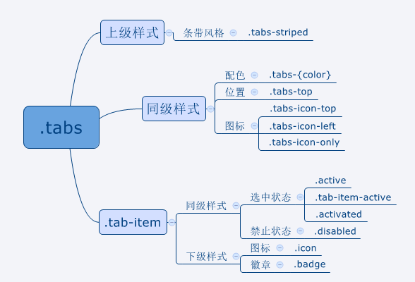

选项卡 : .tabs
选项卡是一个可以包含多个按钮或链接的容器，通常用于提供一致的导航体验。
ionic中使用.tabs样式声明选项卡，使用.tab-item样式声明选项卡 成员
示例：
...
...
...
注意：选项卡默认地位于屏幕底部。
一旦元素应用了.tabs样式，就可以继续 选用三类预定义样式来进一步声明元素及其内容的外观：
1.同级样式 - 同级样式与.tabs应用在同一元素上，声明选项卡的位置、配色等。
2.下级样式 - 下级样式只能应用在.tabs的子元素上，声明子元素的大小等特征。
3.上级样式 - 上级样式应用于.tabs的父元素中，声明选项卡的平台特征。
示例图: 
- Chinese
- English
- Japanese
- Russian